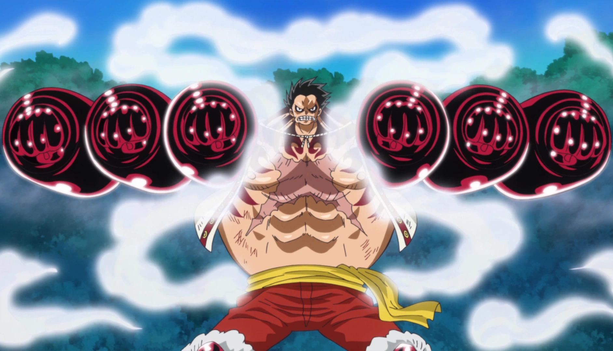

Gear Second
First "gear" of the anime, presented in Enies Lobby

Gear Third
Luffy inflates, making his body bigger. Also presented in Enies Lobby.

Gear Fourth: Boundman
Luffy inflates his body, and using the weapon haki makes his body harder. Presented in Dressrosa.
Gear Fourth: Tankman
When fat, Luffy uses his weapon haki to beat Big Mom's son.Presented in Holy Cake.
Gear Fourth: Snakeman
Luffy makes a perfect balance into attack and defense to beat. Using weapon haki an conqueror haki to beat Katakuri in Holy Cake.
Gear Fifth
In Wano, Kaidou almost kills Luffy, making Luffy's fruit awake, turning Luffy into the Sun God: Nika.